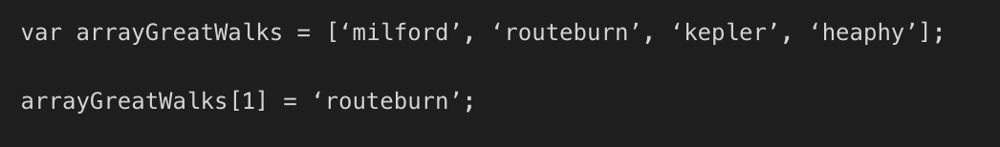

Javascript and The DOM
An analogy to describe the differences between HTML and CSS
HTML is like a house under construction, with its bear minimum and liveable standards.
CSS is that same house designed and decorated. With its walls painted, following a design
pattern and its rooms furnished.
Explain control flow and loops using an example process from everyday life
Control flow
You are making a soup following a recipe. You will need to add the required ingredients
and follow the instructions in the same sequence as described in the recipe book.
Loop
Now you will need to salt the soup to your taste. Your process is to add salt, stir and taste.
Then if the condition wasn’t met (soup not salted to your taste), you will repeat the process - add salt, stir and taste.
You will continue to do this until the condition is met.
Describe what the DOM is and an example of how you might interact with it.
The DOM is the full parse representation of the HTML.
HTML uses tags that are made up of special text inside angle brackets that gives browser instructions.
When the browser identifies these tags, a token is emitted by the Tokenizer. These tokens are consumed and
converted into Node objects. The start and end tokens shows the relationship between the nodes.
It shows if a specific node is the child or parent of another node.
The Document Object Model - or simply The Dom - is the tree representation document that captures all the contents
and properties of these consumed nodes.
Interacting with the DOM
A really exciting way to interact with the DOM is altering the contents of a webpage.
See how I can magically turn myself into an ultramarathon atlete below
Original webpage:
Karina's ultramarathon webpage:
Explain the difference between accessing data from arrays and objects.
Array
square brackets notation [ ]
Arrays work by index.
Arrays are used to store multiple items of the same kind.
Array is used when order is the most important factor for organising the information.
When you retrieve information from the array, you use the index of each element.
Arrays are 0-indexed, which means they start counting at 0 rather than 1.
The below is an example of using objects to organise New Zealand’s Great Walks

Object
Curly brackets notation { }
For collections of data
Objects are best when you want to organise based on data labels, when dealing with multiple related variables.
Object you use to represent on whole thing, with different categories for that main thing. An example is a person.
A person has a first name, a last name, age, a phone number, an address and so on.
Object - Incorrect:
Object - Correct:
Explain what functions are and why they are useful.
Function is a set of statements that performs a task or calculates a value.